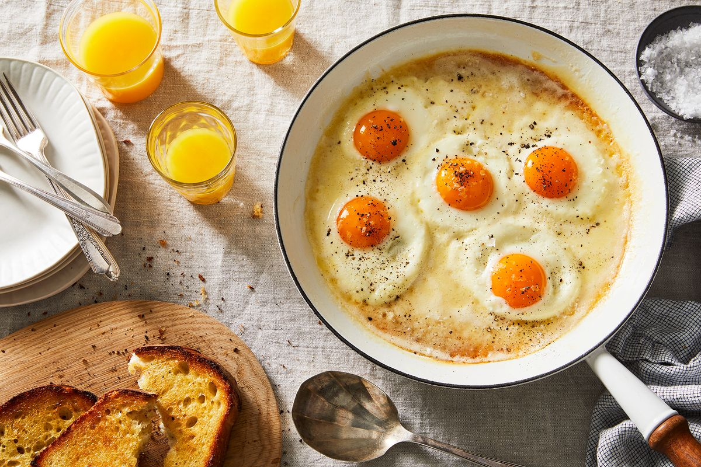

Make this weekend's breakfast a little more impressive—caviar optional.
Learn how to make perfect scrambled eggs with this easy recipe. A quick
breakfast packed with protein.

Ingredients
5 large eggs.
2 tablespoons butter.
5 sea urchin tongues.
1 teaspoon chopped chives.
1 teaspoon crème fraiche.
salt.
Freshly ground black pepper.
(Optional) Shaved white truffle or truffle oil.
Preparation.
Crack and add eggs into nonstick skillet or saucepan. Do not beat eggs
or season yet.
Add butter and place pan over medium heat.
Use a rubber spatula to constantly stir and turn the eggs until they
start to thicken, scraping down the bottom and sides.
Remove from heat, and continue to stir, cooking the eggs off heat for
20 seconds, then on heat for 90 seconds until eggs are soft, but not
runny, about 4 minutes altogether.
Add in 1 sea urchin tongue, and stir, chopping it up slightly with the
spatula. Fold in chives, crème fraiche, salt and pepper, folding in to
incorporate.
Taste for seasoning and adjust if necessary and remove from heat.Place
one sea urchin tongue at the bottom of each plate.
Divide eggs evenly and top with remaining tongues. Shave white truffle
over each dish and serve immediately. If you don’t have access to
white truffle, a small drizzle of truffle oil would be a great
substitute.